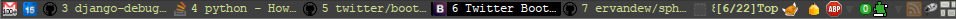

自定义选项
buftabs-elem 各选项含义：
n |
标签计数，见 :help 'guioptions' 中的 Tab number |
t |
网页标题 |
h |
标示页面前进后退是否可用 |
b |
标示是否已在书签中 |
i |
网页图标 favicon |
buftabs-rnu 说明：
当为 true 时，显示 Tab number ，为 false 时，显示 Buffer number
自定义命令
buf[tabs] bt
启/禁用 buftabs
自定义样式
默认样式如下：
BufTabs {
color: inherit;
margin:0 !important;
padding:0 !important;
overflow:hidden;
}
BufTabSelected {
background-repeat:no-repeat;
background-size:contain, contain;
background-position: 2px top;
background-color:#fff;
color:#000;
margin:0 !important;
font-weight:normal;
border-bottom-left-radius:2px;
border-bottom-right-radius:2px;
max-width:130px;
}
BufTabAlternate {
background-repeat:no-repeat;
background-size:contain, contain;
background-position: 2px top;
margin:0 !important;
cursor:pointer !important;
max-width:130px;
}
BufTab {
background-repeat:no-repeat;
background-size:contain, contain;
background-position: 2px top;
margin:0 !important;
cursor:pointer !important;
max-width:130px;
}
BufTab:hover {
color:#2e3330;
background-color: #88b090;
border-bottom-left-radius:2px;
border-bottom-right-radius:2px;
}
BufTabAlternate:hover {
color:#2e3330;
background-color: #88b090;
border-bottom-left-radius:2px;
border-bottom-right-radius:2px;
}
你可以利用 highlight 命令来设置新样式，例如下面这条命令将当前标签页的文字设为红色:
:highlight -a BufTabSelected color:red
屏幕截图

FAQ
- 如何移除 firefox 标题栏？
-
利用 js，强制移除
(function() { var win_ctrl = document.getElementById("window-controls"); win_ctrl.setAttribute("fullscreencontrol", "false"); win_ctrl.setAttribute("hidden", "false"); var mainWindow = document.getElementById("main-window"); mainWindow.setAttribute("hidechrome", "true"); window.maximize(); })(); -
利用系统自带窗口管理器
-